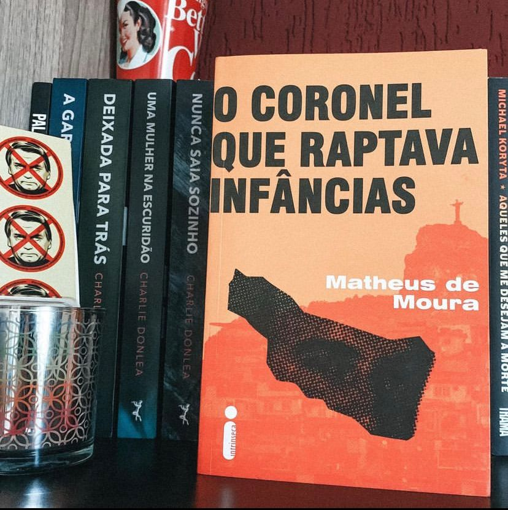

O Coronel que Raptava Infâncias
(Matheus de Moura - Intrínseca)
⭐⭐⭐⭐
⚠️Gatilhos: Pedofilia, abuso sexual infantil.
O livro “O coronel que raptava infâncias” narra uma das histórias mais nefastas do país. O Coronel Pedro Chavarry Duarte reformado da Polícia Militar foi pego com criança nua em seu carro no 2016 (eu mesma lembro dessa repostagem), mas por trás desse abuso havia mais, muito mais e é de deixar qualquer enojado.
Após ser pego por atendente em uma cena em um drive thru no subúrbio do Rio de Janeiro. Ao sair da cabine para entregar o lanche ao cliente de um Jetta branco. Quando o vidro escuro é baixado, a jovem vê um homem de cabelo branco ao volante e, no carona, uma menina que aparenta não ter mais que dois anos.
A A cena seria corriqueira se não fosse insólita: o motorista é Pedro Chavarry Duarte, coronel reformado da Polícia Militar do Rio de Janeiro, que no dia seguinte estaria em todos os telejornais, acusado de estupro de vulnerável. Mas o caso que chocou o estado e o país é, na verdade, apenas o começo do fim da carreira de Chavarry, marcada pela obscuridade de ações que em tese eram pautadas por bandeiras de assistência social. O foco dessa plataforma eram crianças na primeira infância, em geral oriundas de famílias em condições de extrema pobreza. Munido de credenciais que tornavam sua reputação inquestionável, Chavarry encontrava suas vítimas em comunidades carentes: mulheres com filhos muito pequenos. O policial oferecia a elas uma ajuda muito bem-vinda: emprego, assistência financeira e, acima de tudo, cuidava de suas crianças em uma suposta creche. Jamais se descobriu, no entanto, o endereço dessa instituição. Quando Chavarry colocava as crianças em seus carros de luxo alugados, as mães não sabiam para onde elas eram levadas ou o que acontecia durante as muitas horas de ausência. Até a fatídica noite no estacionamento da lanchonete.
Uma resenha difícil de escrever sobre um livro difícil de digerir. Não é uma leitura rápida e fácil e o leitor pode ter que parar durante a narrativa para tomar fôlego.
A pesquisa feita por Matheus de Moura é impecável e cobre todos os aspectos da vida do coronel: sua infância, juventude, como ele engrossou na carreira militar, seus crimes e a impunidade que cerca essa história.
Chavarry se aproveitava da situação de mulheres trabalhadoras e que precisavam deixar seus filhos com alguém, aproveitava da vulnerabilidade dessas crianças.
Não é uma leitura que recomendo para todos mas, escancara uma realidade nacional onde os militares cometem atrocidades e saem impunes.